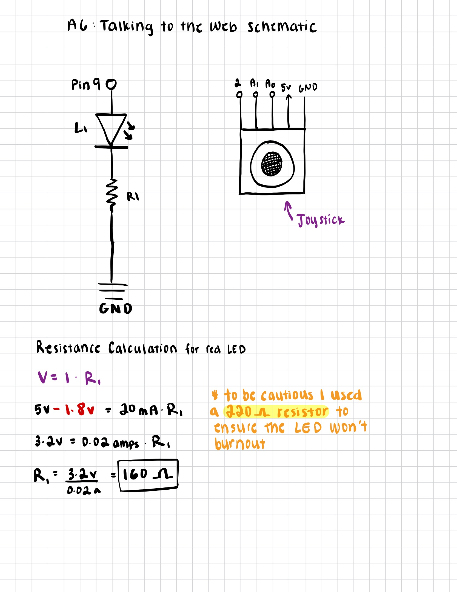

Circuit

Circuit Description: This photo shows the physical implementation of the circuit on a breadboard. The joystick is wired directly to the Arduino's A0 and A1 pins. The red LED is wired to the Arduino's pin 9.
Here is all the documentation for assignment 6!

Schematic & Resistance Calculation Description: This schematic shows the circuit layout for assignment 6. The joystick is connected to the Arduino's A0 and A1 pins. The red LED is connected to the Arduino's pin 9. The red LED uses a 220 ohm resistor to limit the current to the LED.
Circuit Description: This photo shows the physical implementation of the circuit on a breadboard. The joystick is wired directly to the Arduino's A0 and A1 pins. The red LED is wired to the Arduino's pin 9.
// A6: Joystick Spaceship Game Arduino Code
// Game that uses a joystick to control the position of a spaceship on the screen.
// If the spaceship collides with the edge of the screen or any obstacles
// like asteroids, a red LED will flash.
// INPUTS:
// Joystick X-axis - move spaceship horizontally.
// Joystick Y-axis - move vertically.
// Interactions:
// Move the joystick to steer the ship on the canvas.
// If you hit a wall or an asteroid → the LED lights up.
// If you click the webpage → reset the game (and LED turns off).
// The joystick's horizontal movement is connected to analog pin A0.
int xPin = A0;
// The joystick's vertical movement is connected to analog pin A1.
int yPin = A1;
// The red LED is connected to digital pin 9 through a 220 ohm resistor.
int ledPin = 9;
void setup() {
// Start the serial communication so Arduino can communicate with the webpage
Serial.begin(9600);
// Tell Arduino that pin 9 will be used to control an LED.
pinMode(ledPin, OUTPUT);
}
void loop() {
// Read the current horizontal joystick position (0–1023 range).
int xValue = analogRead(xPin);
// Read the current vertical joystick position (0–1023 range).
int yValue = analogRead(yPin);
// Send joystick data to p5.js
// Print the X value first.
Serial.print(xValue);
// Print a comma to separate X and Y values.
Serial.print(",");
// Print the Y value.
Serial.println(yValue);
// Check if the webpage has sent anything back.
if (Serial.available()) {
// Read the one character sent by the webpage (0 or 1).
char command = Serial.read();
// If webpage sent '1', it means the ship crashed = turn on LED.
if (command == '1') {
digitalWrite(ledPin, HIGH);
// If webpage sent '0', it means reset = turn off LED.
} else if (command == '0') {
digitalWrite(ledPin, LOW);
}
}
// Small delay between communication
delay(50);
}
// This code was adapted from the 'button' example
// given to us in class! Especially regarding the
// serial communication functions in my code, that was
// taken from the 'button' example. The rest of the code
// is my own!
// Set the baud rate. This must match the number in Arduino’s
// Serial.begin() function.
const BAUD_RATE = 9600;
// Variables for the serial port and the “Connect to Arduino” button.
let port;
let connectBtn;
// Default joystick values (center position).
let xVal = 512;
let yVal = 512;
// Variables for the spaceship’s position on the canvas.
let shipX, shipY;
// True/false variable that remembers whether the ship is
// touching an obstacle or not.
let collision = false;
function setup() {
setupSerial(); // Create the serial port and connect button.
createCanvas(800, 600); // Set the size of the game window.
// Start the spaceship in the middle of the screen.
shipX = width / 2;
shipY = height / 2;
}
function draw() {
// Check whether the Arduino is connected.
const portIsOpen = checkPort();
// If not connected, stop the game from running.
if (!portIsOpen) return;
// Read any new line of data from Arduino
let str = port.readUntil("\n");
// If we actually received something:
if (str.length > 0) {
// Remove extra spaces/newline, then split it into two numbers.
let parts = str.trim().split(",");
// Make sure we really got two numbers before using them.
if (parts.length === 2) {
xVal = int(parts[0]); // Convert the first part to a number.
yVal = int(parts[1]); // Convert the second part to a number.
}
}
// make screen black and clear it.
background(0);
// Convert joystick values (0 - 1023) to screen coordinates
// (0 - width or height).
shipX = map(xVal, 0, 1023, 0, width);
shipY = map(yVal, 0, 1023, 0, height);
// Draw the spaceship at the new position.
fill(0, 255, 0);
drawSpaceship(shipX, shipY);
// draw the obstacle as a red square
fill(255, 0, 0);
rect(250, 150, 100, 100);
// Check whether the spaceship is inside the boundaries of the obstacle.
if (shipX > 250 && shipX < 350 && shipY > 150 && shipY < 250) {
// If the ship just entered collision:
if (!collision) {
port.write("1"); // Tell Arduino to turn the LED ON.
}
collision = true; // Remember the ship is touching the obstacle.
} else {
// If the ship just left collision:
if (collision) {
port.write("0"); // Tell Arduino to turn the LED OFF.
}
collision = false; // No longer colliding.
}
// display joystick values on the screen
fill(255);
text(`Joystick: ${xVal}, ${yVal}`, 70, 10);
// Show either “Collision!!” or “All clear”
text(collision ? "Collision!!" : "All clear", 30, 30);
}
// function to draw a spaceship-looking shape for my game
function drawSpaceship(x, y) {
push(); // Save current drawing settings
translate(x, y); // Move drawing origin to the spaceship location
fill(150, 200, 255); // light blue body
noStroke();
// Main body of the ship (wide horizontal ellipse)
ellipse(0, 0, 40, 20);
// Wings — two small triangles on the sides
fill(100, 150, 255);
triangle(-20, 0, -35, 10, -20, 10);
triangle(20, 0, 35, 10, 20, 10);
pop(); // Restore original drawing settings
}
// Serial Connection Functions
function setupSerial() {
port = createSerial(); // Create a serial port object.
// check if we’ve connected before
let usedPorts = usedSerialPorts();
// If the user connected before, auto-connect to the same port.
if (usedPorts.length > 0) {
port.open(usedPorts[0], BAUD_RATE);
}
// Make the “Connect to Arduino” button.
connectBtn = createButton("Connect to Arduino");
connectBtn.position(10, 10);
connectBtn.mousePressed(onConnectButtonClicked);
}
function checkPort() {
// If the serial port is NOT open:
if (!port.opened()) {
// Update button text
connectBtn.html("Connect to Arduino");
// Gray background and message telling user what to do
background("gray");
fill(255);
text("Click 'Connect' to start", width / 2, height / 2);
textAlign(CENTER, CENTER);
return false; // Tell draw() that nothing should run yet
} else {
// If the port is open, show “Disconnect”
connectBtn.html("Disconnect");
return true;
}
}
function onConnectButtonClicked() {
// If the port is closed, open it.
if (!port.opened()) {
port.open(BAUD_RATE);
// If it’s already open, close it.
} else {
port.close();
}
}
Code Explanation: This Arduino program reads the values from the joystick and sends them to the webpage. The webpage then displays the spaceship on the screen and moves it around based on the joystick values. If the spaceship collides with the obstacle, the LED will turn on. If the spaceship is not colliding with the obstacle, the LED will turn off. AnalogRead() is used to read the values from the joystick. Serial.print() is used to send the values to the webpage. Serial.read() is used to read the values from the webpage. digitalWrite() is used to turn the LED on and off.

Operation Description: The GIF and video above demonstrate the actual operation of the circuit. As expected, the spaceship moves around the screen based on the joystick values. If the spaceship collides with the obstacle, the LED turns on. If the spaceship is not colliding with the obstacle, the LED turns off.
Answer: